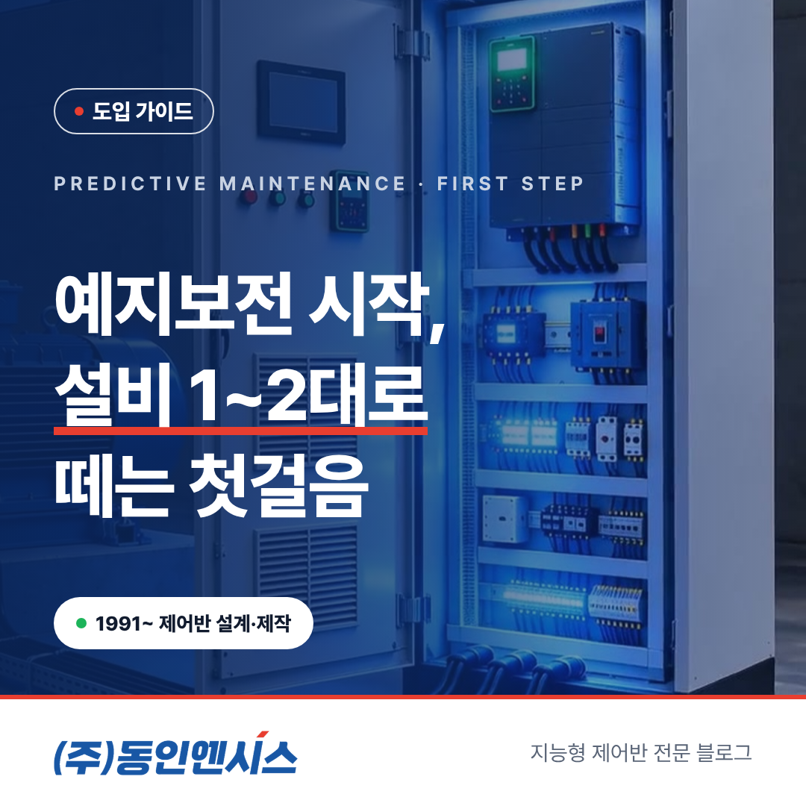
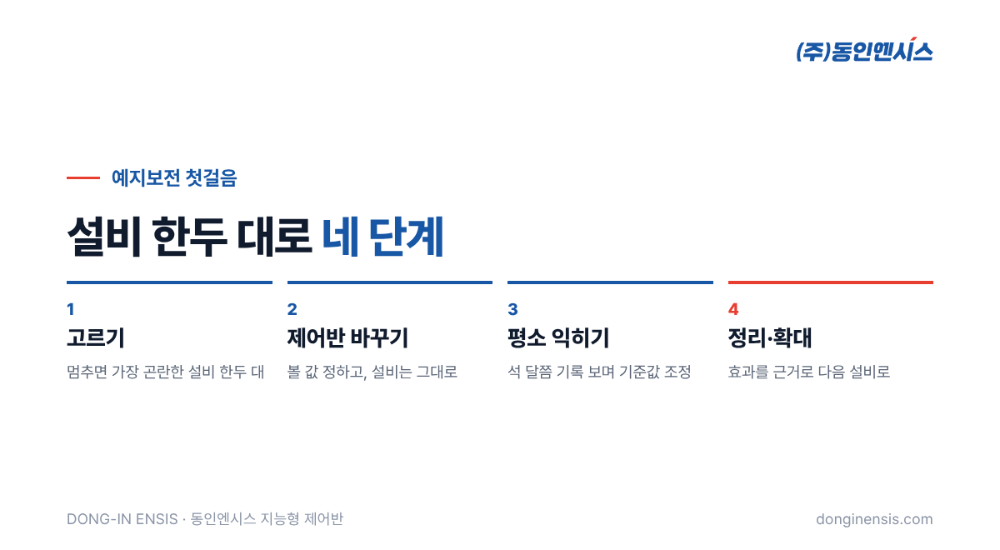
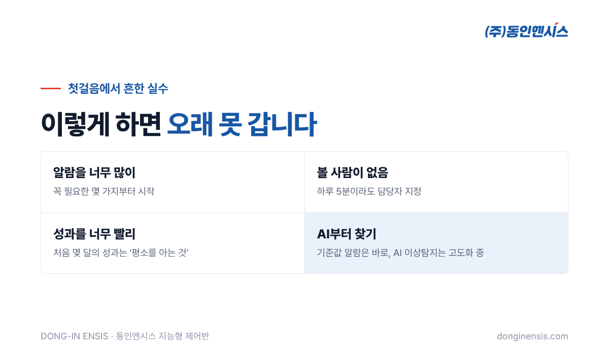

예지보전을 해 보고 싶다는 공장은 많지만, 막상 시작하려면 범위부터 막막합니다. 공장 전체를 다 바꿔야 할 것 같고, AI도 들여야 할 것 같고, 예산은 얼마나 들지 감이 오지 않습니다. 이 글에서는 750건이 넘는 현장에서 제어반을 만들어 온 동인엔시스가 권하는 예지보전 시작 방법, 즉 설비 한두 대로 작게 첫걸음을 떼는 네 단계를 정리했습니다.
예지보전이 처음부터 공장 전체로 가면 실패하기 쉽습니다. 대상이 넓을수록 비용과 기간이 늘고, 데이터는 쌓이는데 정작 무엇을 봐야 할지 정해지지 않아 화면만 켜 두는 상황이 생기기 때문입니다.
반대로 설비 한두 대로 시작하면 얻는 것이 분명합니다. 그 설비가 평소 어떻게 움직이는지 익히고, 알람 기준을 다듬고, 담당자가 데이터를 보는 습관을 들이는 데 집중할 수 있습니다. 여기서 효과를 확인하고 나면, 다음 설비로 넓히는 결정도 숫자와 경험을 바탕으로 내릴 수 있습니다.

첫 설비는 "멈췄을 때 가장 곤란한 설비" 가운데서 고릅니다. 아래 질문에 '예'가 많을수록 첫 대상으로 알맞습니다.
펌프, 송풍기, 압축기처럼 모터로 도는 설비가 대부분 해당합니다. 같은 종류의 설비가 여러 대라면 그중 한두 대만 먼저 해 보는 것도 좋습니다. 나중에 나머지와 비교하기 쉬워집니다.
대상이 정해지면 어떤 값을 볼지 정합니다. 동인엔시스가 만드는 지능형 제어반으로 볼 수 있는 값은 크게 세 묶음입니다. 열(권선·베어링 온도), 움직임(회전속도와 진동), 전기(전압·전류·전력량)이고, 여기에 주변 온습도와 운전 상태가 더해집니다. 첫걸음에서는 이 가운데 그 설비에서 가장 자주 문제가 됐던 묶음부터 챙기는 것이 좋습니다. 베어링이 자주 말썽이었다면 온도와 진동, 과부하로 자주 멈췄다면 전류부터 보는 식입니다.
설비는 그대로 두고 제어반을 교체하거나 새로 설치합니다. 데이터를 모으는 장비를 따로 달지 않아도 되므로, 현장에 늘어나는 장비는 제어반 하나뿐입니다.
설치 직후부터 기록이 쌓이고, 정해 둔 기준을 넘으면 알람이 옵니다. 다만 처음 몇 달은 알람보다 '평소 모습'을 익히는 시간이라고 생각하는 편이 좋습니다.
아침과 오후, 평일과 주말, 생산량이 많은 날과 적은 날에 설비가 어떻게 다른지 보다 보면, 처음 정한 기준값이 너무 빡빡하거나 느슨하다는 것이 드러납니다. 이때 기준값을 조정합니다. 동인엔시스는 시운전과 안정화 단계에서 기준을 함께 정하고, 운영하면서 계절이나 공정 변화에 맞춰 다시 맞춥니다.
몇 달 운영한 뒤에는 무엇이 달라졌는지 정리합니다. 알람 덕분에 미리 손본 일이 있었는지, 순회 점검에 쓰던 시간이 줄었는지, 담당자가 바뀌어도 설비 상태를 바로 파악할 수 있게 됐는지 같은 것들입니다.
이 정리가 다음 단계의 근거가 됩니다. 같은 종류의 설비로 넓힐지, 다른 공정으로 갈지, 지원사업을 활용해 규모를 키울지를 이때 결정합니다.
Photorealistic photo of a single important blue centrifugal pump with electric motor in a Korean factory pump room, a new light-grey control cabinet with a small touchscreen installed right beside it, a laminated checklist clipboard hanging on the cabinet (no readable text), clean concrete floor, soft daylight, no people, no brand logos, no readable text. 3:2 landscape.

예지보전 시작을 앞두고 거창한 준비가 필요하지는 않습니다. 다만 아래 몇 가지를 미리 모아 두면 현장 분석이 훨씬 빨라집니다.
이 정도만 있어도 어느 값을 먼저 볼지, 알람 기준을 어디쯤에서 시작할지 첫 상담에서 대략 그려 볼 수 있습니다. 기록이 거의 없어도 괜찮습니다. 그럴수록 제어반이 남기는 기록이 더 값지게 쓰입니다.
한두 대에서 시작한 예지보전이 자리를 잡으면, 같은 방식으로 설비를 하나씩 늘려 가면 됩니다. 처음에 데이터 구조를 같은 틀로 맞춰 두었기 때문에, 설비가 늘어나도 화면과 관리 방식은 그대로 이어집니다.
쌓인 기록은 나중에 생산관리 시스템이나 AI 분석에 연결할 수 있는 재료가 됩니다. 처음 한 걸음이 작아도, 그 걸음이 같은 방향을 향하고 있다면 충분합니다.
Photorealistic photo of a Korean factory maintenance staff member in a grey work jacket holding a coffee cup and looking at a tablet showing abstract green status tiles and a simple trend line (no readable text) in a quiet early-morning factory corridor, soft warm light through windows, documentary style, face softly focused, no brand logos, no readable text. 3:2 landscape.
Q. 한두 대만 해도 의미가 있나요? 네. 멈추면 가장 곤란한 설비 한 대를 지키는 것만으로도 의미가 큽니다. 그리고 그 경험이 다음 설비로 넓힐지 판단하는 가장 좋은 근거가 됩니다.
Q. 첫걸음에 드는 기간은요? 현장 분석부터 시운전까지 보통 9~15주를 잡습니다. 설비와 현장 조건에 따라 달라질 수 있습니다.
Q. 예지보전 시작에 AI가 꼭 필요한가요? 아닙니다. 첫걸음은 기준값을 넘을 때 알려 주는 알람과 24시간 기록만으로 충분히 시작할 수 있습니다. AI 이상탐지는 데이터가 쌓인 뒤에 더해 가는 기능이며, 동인엔시스도 실증을 거쳐 고도화하고 있습니다.
Q. 기존 설비가 오래됐는데 괜찮을까요? 설비 자체는 그대로 두고 제어반만 바꾸기 때문에, 오래된 설비일수록 오히려 첫 대상으로 알맞은 경우가 많습니다. 현장 분석에서 모터와 배선 상태를 함께 확인합니다.
Q. 데이터는 누가 보나요? 고객사 담당자가 웹 화면에서 확인하고, 동인엔시스는 원격 상태 확인과 정기 점검, 알람 기준 조정을 함께 지원합니다. 처음에는 화면 보는 법과 알람 대응 방법을 교육해 드립니다.
예지보전 시작은 크게 벌이는 일이 아니라, 지켜야 할 설비 하나를 정하는 일에서 출발합니다. 고르고, 기록하고, 익히고, 넓히는 네 단계를 차근차근 밟으면 됩니다.
1991년부터 공장 설비 곁에서 제어반을 만들어 온 동인엔시스가 우리 공장의 첫 설비를 함께 골라 드립니다.
예지보전 상담 051-862-3668 · dongin@donginmne.com
아래 질문 중 하나에 실제 경험으로 답해 본문 적당한 곳에 넣어 주세요. 사람이 직접 쓴 문장이 들어가면 네이버에서 저품질 위험이 줄고 노출에 도움이 됩니다.